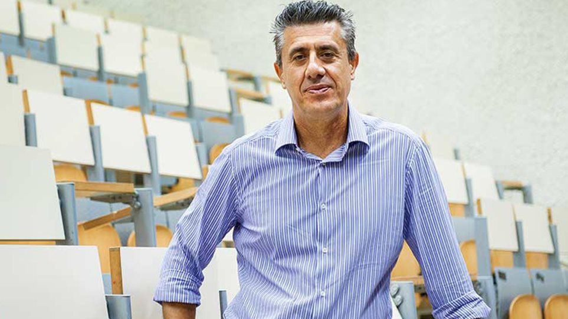

ΠΑΤΗΣΤΕ ΤΟ ΒΕΛΑΚΙ ΓΙΑ ΝΑ ΜΕΤΑΒΕΙΤΕ ΣΤΗΝ ΠΡΟΗΓΟΥΜΕΝΗ ΙΣΤΟΣΕΛΙΔΑ

Κωνσταντίνος (Κωστής) ΔασκαλάκηςΟ Κωνσταντίνος (Κωστής) Δασκαλάκης (γεν. 29/04/1981) είναι Καθηγητής του Τμήματος Ηλεκτρολόγων Μηχανικών και Επιστήμης Υπολογιστών του ΜΙΤ και μέλος του Εργαστηρίου Πληροφορικής και Τεχνητής Νοημοσύνης του MIT. Το 2018 διακρίθηκε με το περίβλητο Βραβείο Νεβάνλινα από την διεθνή ένωση μαθηματικών. ΣΥΝΤΟΜΟ ΒΙΟΓΡΑΦΙΚΟΟ Κωνσταντίνος Δασκαλάκης είναι καθηγητής της Επιστήμης των Υπολογιστών στο ΜΙΤ. Είναι απόφοιτος των Ηλεκτρολόγων του Ε.Μ.Π., έκανε διδακτορικό στο Πανεπιστήμιο του Μπέρκλεϋ, και εργάστηκε ως μεταδιδακτορικός ερευνητής στη Microsoft. Η έρευνά του επικεντρώνεται στην θεωρητική πληροφορική και την διεπαφή της με τα Οικονομικά, την Στατιστική και την Τεχνητή Νοημοσύνη. Έχει τιμηθεί με το βραβείο της καλύτερης διδακτορικής διατριβής στην πληροφορική από τον διεθνή οργανισμό επιστήμης των υπολογιστών ACM, με το βραβείο Kalai από την διεθνή ένωση Θεωρίας Παιγνίων, το βραβείο εξαιρετικής δημοσίευσης από την διεθνή ένωση εφαρμοσμένων μαθηματικών SIAM, το Career Award από το Ίδρυμα Επιστημών της Αμερικής, το βραβείο Πληροφορικής του Ιδρύματος Sloan, την ερευνητική υποτροφία της Microsoft και το βραβείο έρευνας από το ίδρυμα Giuseppe Sciacca του Βατικανού. |
Γιώργος Κ. Καραγιαννίδης Ο Γιώργος Κ. Καραγιαννίδης είναι Καθηγητής Ηλεκτρολόγων Μηχανικών και Μηχανικών Υπολογιστών στο Τμήμα Ηλεκτρολόγων Μηχανικών και Μηχανικών Υπολογιστών του Αριστοτελείου Πανεπιστημίου Θεσσαλονίκης και διευθυντής του Εργαστηρίου Ψηφιακών Συστημάτων Τηλεπικοινωνιών και Δικτύων. ΣΥΝΤΟΜΟ ΒΙΟΓΡΑΦΙΚΟΓεννήθηκε στο Πυθαγόρειο Σάμου και αποφοίτησε από το Πυθαγόρειο Λύκειο Αρρένων Σάμου. Είναι διπλωματούχος του Τμήματος Ηλεκτρολόγων Μηχανικών & Τεχνολογίας Υπολογιστών του Πανεπιστημίου Πατρών (1987) και ∆ιδάκτωρ του ιδίου Τμήματος (1998). Από το 2000 έως τον Ιούνιο του 2004 εργαζόταν ως Ερευνητής στο Ινστιτούτο ∆ιαστημικών Εφαρμογών & Τηλεπισκόπισης του Εθνικού Αστεροσκοπείου Αθηνών. Από τον Ιούνιο του 2004 είναι Καθηγητής Ψηφιακών Τηλεπικοινωνιακών Συστημάτων στο Τμήμα Ηλεκτρολόγων Μηχανικών και Μηχανικών Υπολογιστών του ΑΠΘ. Οι κυριότερες ερευνητικές του δραστηριότητες περιλαμβάνουν Κινητές και ∆ορυφορικές Επικοινωνίες, Ασύρματη μεταφορά ενέργειας, Ασύρματες οπτικές επικοινωνίες, Εφαρμογές της Ρομποτικής στις Τηλεπικοινωνίες, κ.λ.π. Έχει δημοσιεύσει πάνω από 450 άρθρα σε διεθνή περιοδικά και συνέδρια, ενώ το επιστημονικό του έργο έχει λάβει πάνω από 8000 αναφορές. Είναι συγγραφέας 3 βιβλίων πάνω στις Τηλεπικοινωνίες, δύο από αυτά στην Ελληνική γλώσσα και ένα στην Αγγλική. Έχει δώσει πάνω από 40 διαλέξεις σε ξένα πανεπιστήμια και φόρα και έχει βραβευθεί πολλές φορές για το ερευνητικό του έργο από διεθνείς οργανισμούς. Συνεργάζεται ερευνητικά με επιστήμονες από τα μεγαλύτερα πανεπιστήμια του κόσμου, όπως το ΜΙΤ, Princeton, Stanford, κ.λ.π. Τον Οκτώβριο του 2015 ανακηρύχθηκε Ομότιμος Καθηγητής σε ένα από τα παλαιότερα και μεγαλύτερα πανεπιστήμια της Κίνας, το Southwest Jiatong University. Είναι μεταξύ των Ελλήνων ακαδημαϊκών που ανήκουν στη λίστες 2015 και 2016 Thomson Reuters, των επιστημόνων με τη μεγαλύτερη επιρροή στην έρευνα παγκοσμίως και ειδικότερα στις επιστήμες Πληροφορικής και Τηλεπικοινωνιών (Computer Science). |
Μίνως ΓαροφαλάκηςEπιστήμονας και καθηγητής του Πολυτεχνείου Κρήτης. ΣΥΝΤΟΜΟ ΒΙΟΓΡΑΦΙΚΟΟ Μίνως Γαροφαλάκης είναι Διευθυντής του Ιντστιτούτου Πληροφοριακών Συστημάτων (ΙΠΣΥ) του Ερευνητικού Κέντρου "Αθηνά" , Καθηγητής στο Τμήμα Ηλεκτρολόγων Μηχανικών και Μηχανικών Υπολογιστών (ΗΜΜΥ) του Πολυτεχνείου Κρήτης, και Διευθυντής του Εργαστηρίου Τεχνολογίας Συστημάτων Λογισμικού και Δικτυακών Εφαρμογών (SoftNet). Νωρίτερα, είχε εργασθεί σαν Κύριος Ερευνητής Επιστήμων στην Ομάδα Κοινοτικών Συστημάτων της Yahoo! Research στην Santa Clara, California (2007-2008), και σαν Adjunct Αναπληρωτής Καθηγητής της Επιστήμης Υπολογιστών στο Πανεπιστήμιο της California, Berkeley (2006-2008). Επίσης, εργάστηκε σαν Ανώτερος Ερευνητής στην Intel Research Berkeley (2005-2007), και σαν Μέλος Τεχνικού Προσωπικού στα Bell Laboratories (1998-2005). Απέκτησε το διδακτορικό του δίπλωμα στην Επιστήμη Υπολογιστών από το Πανεπιστήμιο του Wisconsin-Madison το 1998. Είναι Associate Editor για τα περιοδικά ACM Transactions on Database Systems (ACM TODS) και IEEE Transactions on Knowledge and Data Engineering (IEEE TKDE), καθώς και μέλος του Editorial Board για το περιοδικό Foundations and Trends in Databases. Πρόσφατα διετέλεσε Πρόεδρος της Επιτροπής Προγράμματος για το διεθνές συνέδριο VLDB’2007 στην Βιέννη, και συμπλήρωσε μία διετή θητεία σαν Associate Editor του IEEE Data Engineering Bulletin (2004-2006). Έχει επανειλημμένα διατελέσει μέλος της επιτροπής προγράμματος για όλα τα μεγάλα συνέδρια διαχείρισης δεδομένων, όπως ACM SIGMOD, VLDB, ACM PODS, IEEE ICDE, και ACM SIGKDD. Είναι μέλος της ACM, της IEEE, και της IEEE Computer Society. |